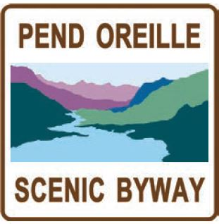

The Pend Oreille (pon-der-ay) Scenic Byway offers travelers some of
Idaho's most spectacular water views. Beginning at the intersection
with U.S. 95, Idaho 200 meanders eastward to the Montana state
line across farmlands, through river deltas, and along the rocky
northern shores of Lake Pend Oreille, all sculpted by the massive
force of glaciers and the floodwaters of Glacial Lake Missoula.
Pullouts along the byway allow visitors to stop and enjoy breathtaking
vistas of mountainous horizons framing miles of open water.
Four-season recreational opportunities begin along the shores of the
lake and reach across the vast regions of national forest overlooking
the Pend Oreille Scenic Byway. Whether you are inclined to swim
or fish, boat or golf, hunt or hike mountain trails, alpine ski or
snowmobile, water ski or bird watch, each of our distinctive four
seasons offers an outstanding recreational opportunity for almost
every person who enjoys the outdoors. Visitors can find varying
accommodations from unimproved mountain campsites to maintained
shoreline campgrounds to recreational vehicles parks along the water
or choose from lakefront resorts or motels.